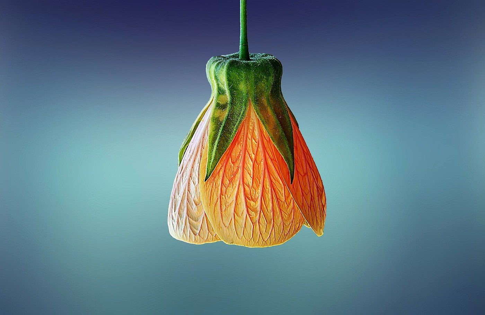

店のこと
ラジオメーターの部位の配置図
お店の詳しい情報は準備中です。ここでは、制作側が考えたデザインの考え方を紹介します。


制作側の連想
番号は、部位の番号
ホームの図にある1〜6の番号は、それぞれラジオメーターの部位の名前に対応します。ラジオメーターの部位を図にしたもので、制作側の連想です。お店の理念・由来とは無関係で、実際の製品の仕様を示すものでもありません。
1ガラス球
羽根や針をまるごと包む透明な球で、中の空気を薄くして封じてある。
2羽根
回転する四枚の小さな板で、片面が黒く、反対の面が明るい色になっていることが多い。
3十字の腕
四枚の羽根を中心から支える、細い十字形の骨組み。
4軸受
十字の腕の真ん中にある小さな受け皿で、針の先にのって回る。
5支え針
回る部分を下から支える細い針で、球の内側にある柱の先に立つ。
6封じ口
球から空気を抜いたあとに封じた跡の、小さな突起。
写真(イメージ)
写真(イメージ)



写真はイメージです。お店のものではありません。